실내건축산업기사 (2004-03-07 기출문제)
1과목: 실내디자인론
1. 현대 실내디자이너의 역할로서 가장 적당한 것은?
- 내부공간의 설계만을 담당한다.
- 모든 실내디자인은 디자이너의 입장에서 고려되고 계획되어져야 한다.
- 기초원리와 재료들에 대한 지식과 함께 대인관계의 기술도 알아야 한다.
- 실내디자이너는 건축공정을 제외한 실내구조에 대한 이해가 있어야 한다.
(정답률: 69%)

2. 은행의 영업카운터의 전체 높이로 가장 알맞은 것은?
- 700∼800mm
- 500∼650mm
- 600∼700mm
- 1000∼1⑤0mm
(정답률: 42%)
3. 주택의 실내공간 중 가족의 휴식, 대화, 단란한 공동생활의 중심이 되는 곳은?
- 거실
- 주방
- 침실
- 응접실
(정답률: 96%)
4. 공간을 구성하는 수평적 요소로 물체의 무게와 움직임을 안전하게 지탱해주는 것은?
- 계단
- 반자
- 벽면
- 바닥
(정답률: 82%)
5. 채광을 조절하는 일광 조절장치와 관련이 없는 것은?
- 루버(louver)
- 커튼(curtain)
- 베니션블라인드(venetain blind)
- 디퓨져(diffuser)
(정답률: 87%)
6. 실내디자인 프로세스에 관한 도표 중 빈 사각형 안에 들어가야 할 내용은?
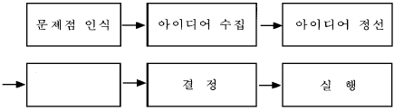
- 제작, 시공
- 분석
- 조건설정
- 프로그래밍
(정답률: 40%)
7. 조명의 배광방식에 의한 분류에 대한 설명 중 옳지 않은 것은?
- 직접조명 - 눈부심이 일어나기 쉽고 균등한 조도분포를 얻기 힘들다.
- 반직접조명 - 60~90% 광량이 직접 표면을 향하여 아래로 비추고 적은 양의 빛이 위쪽의 천장면으로 향한다.
- 간접조명 - 조명의 효율이 적고 보수유지가 어려워 비경제적이다.
- 반간접조명 - 직접조명과 간접조명을 함께 사용하는 것으로 조명이 모든 방향으로 균등하게 배분된다.
(정답률: 30%)
8. 치수계획에 있어 적정치수를 설정하는 방법으로 최소치 +α , 최대치-α 목표치 ±α 가 있는데, 이때 α 는 적정치수를 끌어내기 위한 어떤 치수인가?
- 기본치수
- 조정치수
- 유동치수
- 가능치수
(정답률: 71%)
9. 디자인 요소의 개념 중 적당하지 않은 것은?
- 점은 위치만 가진 무차원의 추상개념이다.
- 선은 모든 조형의 최초의 요소로 규정된다.
- 평면이란 완전히 평평한 면을 말하는데 이는 선들이 교차함으로써 이루어진다.
- 3차원의 형상은 직교식 선형체와 비직교식 선형체, 그리고 이 양자의 복합적 구조로 나눌 수 있다.
(정답률: 58%)
10. 다음의 게슈탈트 이론에 대한 설명 중 옳지 않은 것은?
- 접근성: 보다 더 가까이 있는 2개 이상의 시각요소들은 패턴이나 그룹으로 지각될 가능성이 크다.
- 연속성: 창호의 완자살이 좋은 예이다.
- 유사성: 형태, 규모, 색채, 질감이 완전히 다르더라도 접근성에 의해 하나의 패턴으로 지각된다.
- 폐쇄성: 패쇄된 형태는 패쇄되지 않은 형태보다 시각적으로 더 안정감이 있다.
(정답률: 38%)
11. 리듬과 연계를 갖는 디자인의 원리는?
- 균제
- 대칭
- 대조
- 반복
(정답률: 90%)
12. 거실의 가구 배치 형식에서 서로 직각이 되도록 연결 배치하여 시선이 마주치지 않아 안정감이 있게 하는 배치 형태는?
- 대면형
- 코너형
- U자형
- 복합형
(정답률: 73%)
13. 디오라마 전시방법에 대한 설명으로 가장 알맞은 것은?
- 연속적인 주제를 시간적인 연속성을 가지고 선형으로 연출하는 전시 방법이다.
- 천장과 벽면을 따라 전시하지 않고 주로 전시물의 입체물을 중심으로 독립된 전시공간에 배치하는 방법이다.
- 전시물을 동일한 크기의 공간에 규칙적으로 반복하여 배치하는 방법이다.
- 일정한 한정 공간속에서 배경 스크린과 실물의 종합 전시를 동시에 연출하여 현장감을 살리는 방법이다.
(정답률: 69%)
14. 다음 중 실내공간계획에서 가장 중요하게 고려해야 할 점은?
- 조명스케일
- 가구스케일
- 공간스케일
- 인체스케일
(정답률: 88%)
15. 실내디자인의 기본 원리 중 인간의 주의력에 의해 감지되는 시각적 무게의 평형상태를 뜻하는 가장 일반적인 미학은?
- 균형
- 리듬
- 비례
- 변화
(정답률: 78%)
16. 쇼원도우에 대한 다음 설명 중 옳지 않은 것은?
- 쇼윈도우의 바닥높이는 진열되는 상품의 종류에 따라 고저를 결정하며 운동용구, 구두, 시계 및 귀금속은 높게 할 수록 좋다.
- 쇼윈도우는 상점 파사드의 일부분으로 통행인에게 상점의 특색이나 취급상품을 알리는 기능을 담당한다.
- 쇼윈도우의 눈부심을 방지하기 위해 외부측에 차양을 설치하여 그늘을 만들어 준다.
- 쇼윈도우의 바닥면에 사용되는 재료는 상품의 색상과 재질의 특성에 따라 달리하는 것이 바람직하다.
(정답률: 72%)
17. 프로젝트의 발생범주를 실내공간의 사용목적별로 분류한 것 중 옳지 않은 것은?
- 전시목적공간 : 박물관, 미술관, 기업홍보관
- 위락목적공간 : 호텔, 유스호스텔, 휴양콘도미니엄
- 집회목적공간 : 컨벤션홀, 예식장
- 교육목적공간 : 유치원, 연구소, 도서관
(정답률: 45%)
18. 실내디자인 요소에 관한 설명 중 부적당한 것은?
- 베이윈도우(bay window)는 바닥부터 천장까지 닿는 커다란 창들을 통칭하는 것이다.
- 브라인드(blind)는 일조, 조망과 시각차단을 조정하는 기계적인 창가리개이다.
- 드레이퍼리(drapery)는 창문에 느슨하게 걸려 있는 무거운 커튼으로 장식적인 목적으로 이용된다.
- 플러쉬도어(flush door)는 일반적으로 사용되는 목재문을 말한다.
(정답률: 29%)
19. 실내디자이너의 역할과 조건에 대한 설명으로 가장 옳지 않은 것은?
- 실내디자이너는 공간구성에 필요한 모든 기술과 도구를 사용할 줄 알아야 한다.
- 실내디자이너는 건물 내부와 가구 디자인, 배치를 계획하고 감독한다.
- 실내디자이너는 사용자의 생활방식에 적합한 분위기로 창조해야 한다.
- 실내디자이너는 공사의 전(全)공정을 충분히 이해하고 있어야 한다.
(정답률: 75%)
20. 디자인의 원리 중 대비에 관한 설명으로 알맞은 것은?
- 모든 시각적 요소에 대하여 극적 분위기를 주는 상반된 성격의 결합에서 이루어진다.
- 디자인 대상의 전체에 미적 질서를 부여하는 것으로 모든 형식의 출발점이며 구심점이다.
- 제반요소를 단순화하여 실내를 조화롭게 하는 것이다.
- 저울의 원리와 같이 중심에서 양측에 물리적 법칙으로 힘의 안정을 구하는 현상이다.
(정답률: 76%)
2과목: 색채 및 인간공학
21. 육체적으로 태만해지는 온도는?
- 16℃
- 18℃
- 21℃
- 24℃
(정답률: 62%)
22. 다음 PCCS의 톤분류 기호에서 '해맑은'에 해당되는 것은?
- p
- lt
- s
- v
(정답률: 24%)
23. 다음 색 중 중량감이 가장 가볍게 느껴지는 것은?
- 주황
- 노랑
- 연두
- 노란연두
(정답률: 65%)
24. 문ㆍ스펜서의 색채조화론 내용과 맞지 않는 것은?
- 동등조화
- 윤성조화
- 유사조화
- 대비조화
(정답률: 74%)
25. 손으로 누르는 버튼(Button)은 다음 중 어느 것이 가장 적합한가?
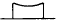
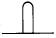
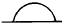
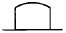
(정답률: 64%)
26. 상품에 있어서 색의 역할과 가장 거리가 먼 것은?
- 사람의 시선을 끌고 손님을 정착시키는데 큰 역할을 한다.
- 상품에 대한 이미지를 전달한다.
- 소비자에게 상품을 기호에 따라 쉽게 선택할 수 있게 한다.
- 분산효과를 주어 부드러운 분위기를 높인다.
(정답률: 81%)
27. 명소시에서 암소시로 이행할 때 붉은 색은 어둡게 되고 녹과 청색은 상대적으로 밝게 보이는 현상을 발견한 사람은?
- 먼셀
- 오스트발트
- 프르킨예
- 영.헬름홀쯔
(정답률: 64%)
28. 다음 그림의 인체골격중 팔 부분의 명칭을 A, B, C의 순서에 맞게 배열된 것은?
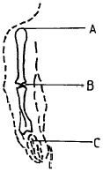
- 견봉돌기 - 상박골상과 - 장골
- 상박골상과 - 척골 - 장골
- 상박 - 척골 - 장골
- 견봉돌기 - 척골 - 장골
(정답률: 22%)
29. 자동차 디자인을 예로 들때 인간공학과 직접적으로 결부되는 부분은?
- 자동차의 성능
- 자동차의 재질
- 자동차의 가격
- 자동차의 조작성
(정답률: 57%)
30. 색채의 감각에서 시간은 길게 느껴지고 속도는 반대로 빨리 움직이는 것 같은 색은?
- 황색계열
- 적색계열
- 녹색계열
- 청색계열
(정답률: 54%)
31. 다음 색명법에 관한 설명 중 잘못된 것은?
- 색명이란 색이름에 의하여 색을 표시하는 표색의 일종이다.
- 색명은 정량적이고 정확하게 색을 나타낼 수 있다.
- 숫자나 기호보다 색감을 잘 표현하며 부르기 쉽다.
- 색명은 크게 관용색명과 계통색명으로 나눈다.
(정답률: 47%)
32. 망막이 자극을 받은 후에도 시신경의 흥분이 남아있는 현상은 무엇인가?
- 단일상
- 이중상
- 잔상
- 허상
(정답률: 84%)
33. 같은 물체색이라도 조명에 따라 다르게 보이는 현상은?
- 분광특성
- 연색성
- 색순응
- 등색성
(정답률: 56%)
34. 실내를 일률적으로 밝히는 조명방법으로 눈의 피로가 적어져서 사고나 재해가 적어지는 조명법은?
- 직접조명
- 간접조명
- 전반조명
- 국부조명
(정답률: 18%)
35. 운동형태를 묘사할 때 구부리거나 몸의 부분 사이의 각도를 줄이는 것은?
- 유착(flexion)
- 확장(extension)
- 외전(abduction)
- 내전(adduction)
(정답률: 40%)
36. 다음 색 중 감법혼색의 2차 색은?
- 마젠타(Magenta)
- 녹색(Green)
- 노랑(Yellow)
- 시안(Cyan)
(정답률: 45%)
37. 음을 완전하게 흡수하는 1 평방 피트(feet)의 표면에 상당하는 음향흡수 단위는?
- sone
- cycle
- sabine
- dyne
(정답률: 47%)
38. 다음 그림 중 조명의 가장 적합한 위치는?
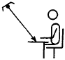
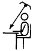
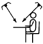
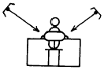
(정답률: 60%)
39. 귀에 들어오는 음이 여러가지일 때 어떤 음이 다른 음을 들리지 않게 하는 작용은?
- 가현작용
- 엄폐작용
- 방음작용
- 절연작용
(정답률: 44%)
40. 오스트발트 색채 조화론에 관한 설명 중 틀린 것은?
- 무채색 단계에서 같은 간격으로 선택한 배색은 조화 된다.
- 등색상 3각형의 아래쪽 사변에 평행한 선상의 색들은 조화된다.
- 등색상 3각형의 위쪽 사변에 평행한 선상의 색들은 조화된다.
- 색상 일련번호의 차가 8-9일 때 유사색 조화가 생긴다.
(정답률: 54%)
3과목: 건축재료
41. 실적률이 큰 골재를 사용한 콘크리트에 관한 설명 중 틀린 것은?
- 시멘트 페이스트량이 적게 든다.
- 건조수축률이 증가한다.
- 투수성과 흡습성이 감소된다.
- 내구성과 마모저항이 증대된다.
(정답률: 32%)
42. 시멘트의 비중에 관한 설명 중 틀린 것은?
- 보통포틀랜드시멘트의 비중은 3.⑤~3.15 정도이다.
- 혼합시멘트의 비중은 보통포틀랜드시멘트의 비중보다 크며, 혼합재의 혼입량이 많아질수록 커진다.
- 시멘트는 풍화할수록 비중이 작아진다.
- 시멘트의 비중은 소성온도나 성분에 의하여 다르며, 르샤틀리에의 비중병으로 측정된다.
(정답률: 30%)
43. 도장공사에서 초벌도료에 대한 다음 설명 중 틀린 것은?
- 피도면과의 부착성을 높이고, 재벌, 정벌 칠하기 작업이 좋도록 만드는 것이 초벌도료이다.
- 철재면 초벌도료는 방청도료이다.
- 콘크리트, 모르타르 벽면에는 유성페인트로 초벌칠을 한다.
- 목재면의 초벌도료는 목재면의 흡수성을 막고, 부착성을 증진시키고, 아울러 수액이나 송진등의 침출을 방지한다.
(정답률: 67%)
44. 미장재료에 대한 설명으로 틀린 것은?
- 소석회는 흙손에 의한 시공성을 개선하기 위해 풀재를 혼입하여 시공하나, 돌로마이트 플라스터는 풀재를 사용하지 않고 바름벽을 시공할 수 있다.
- 고온소성의 무수석고를 이용한 킨즈시멘트는 경화속도는 느리지만 강도가 높다.
- 석고플라스터는 경화ㆍ건조시 치수 안정성과 뛰어난 내화성을 가지고 있다.
- 미장재료로서의 시멘트는 기타 미장재료용 결합재료와 비교하여 작업성이 나쁘다.
(정답률: 13%)
45. 구리와 주석을 주체로 한 합금으로 건축장식철물 또는 미술공예 재료에 사용되는 것은?
- 황동
- 청동
- 브리키
- 스테인레스강
(정답률: 44%)
46. 급경성으로 내알칼리성 등의 내화학성이나 접착력이 크고 내수성이 우수한 접착제로 금속, 석재, 도자기, 글라스, 콘크리트, 플라스틱재등의 접착에 광범위하게 사용되는 것은?
- 요소수지 접착제
- 에폭시수지 접착제
- 아크릴수지 접착제
- 비닐수지 접착제
(정답률: 64%)
47. 돌로마이트에 화강석 부스러기, 색모래, 안료 등을 섞어 정벌바름하고 충분히 굳지 않은 때에 표면에 거친솔, 얼레빗등으로 긁어 거친면으로 마무리하는 것으로 일종의 인조석바름은?
- 러프코트
- 섬유벽
- 리신바름
- 테라조 현장바름
(정답률: 39%)
48. 재료의 특성을 잘못 설명한 것은?
- 열가소성 수지는 가열하면 연화된다.
- 강화유리는 망입유리를 말한다.
- 합판은 함수율 변화에 의한 신축변형이 적고 방향성이 없다.
- 합성수지도료는 일반적으로 내알카리성이 우수하다.
(정답률: 52%)
49. 점토 및 점토제품에 대한 설명 중 틀린 것은?
- 건축용 점토제품의 소성색은 철화합물, 망간화합물, 소결상황, 소성온도에 따라 달라진다.
- 화학성분 중 규산의 비율이 높은 경우 산에 대한 저항성이 증가한다.
- 3% 이상의 흡수율을 갖는 석기질과 도기질은 동해를 일으키기 쉬우므로 외부에는 사용하지 않는 것이 좋다.
- 과소벽돌은 견고하기 때문에 일반 구조용 재료로 적당하다.
(정답률: 46%)
50. KS에 규정된 1종 포틀랜드 시멘트의 4주 압축강도는?
- 180kgf/cm2 이상
- 210kgf/cm2 이상
- 290kgf/cm2 이상
- 330kgf/cm2 이상
(정답률: 32%)
51. 목재 가공품 중 판재와 각재를 섬유방향으로 접착하여 만든 것으로 보, 기둥, 아치, 트러스 등의 구조부재로도 사용되는 것은?
- 합판
- 집성목재
- 파티클 보드
- 코펜하겐 리브
(정답률: 25%)
52. 알루미늄의 성질에 대한 설명 중 틀린 것은?
- 알칼리에 대하여 강한 성질을 가지고 있다.
- 압연, 인발 등의 가공성이 좋다.
- 내화성이 적다.
- 연질이기 때문에 손상되기 쉽다.
(정답률: 52%)
53. 다음의 천장, 내벽마감재의 보드 중 내습성은 좋지 않지만 방화성과 차음성이 우수한 것은?
- 석고보드
- 플라스틱보드
- 섬유판
- 파티클보드
(정답률: 50%)
54. FRP(fiber reinforced plastics)에 대한 설명이다. 틀린 것은?
- 내약품성이 우수하다.
- 투광성이 우수하다.
- 비강도가 적다.
- 욕조, 정화조 등에 사용된다.
(정답률: 30%)
55. 콘크리트의 중성화에 관한 설명으로서 틀린 것은?
- pH가 10.0 정도의 알칼리성인 콘크리트가 pH 7.0 정도의 중성을 띠게 되는 현상을 말한다.
- 콘크리트의 중성화는 주로 공기중의 이산화탄소 침투에 기인하는 것이다.
- 중성화가 진행되어도 콘크리트의 강도는 거의 변화가 없으나, 중성화되면 철근이 부식하기 쉽게 된다.
- 콘크리트의 중성화에 미치는 요인으로 물시멘트비, 시멘트와 골재의 종류, 혼화재료의 유무 등이 있다.
(정답률: 18%)
56. 경질섬유판의 성질에 관한 기술 중 틀린 것은?
- 가로· 세로의 신축이 거의 같으므로 비틀림이 적다.
- 표면이 평활하고 비중이 0.7 이하이며 경도가 크다.
- 구멍뚫기, 본뜨기, 구부림 등의 2차가공도 용이하다.
- 펄프를 접착제로 제판하여 양면을 열압건조시킨 것이다.
(정답률: 34%)
57. 실링재에 대한 설명으로 틀린 것은?
- 용도에 따라 금속용, 콘크리트용, 유리용 등으로 구분한다.
- 시공계절은 춘추 이외에 하기용, 동기용으로 구분하기도 한다.
- 실링재의 선택에서 가용시간은 고려할 필요가 없다.
- 유동성에 따라 수직부위 사용과 수평부위 사용으로 분류할 수 있다.
(정답률: 77%)
58. 목재 강도(强度)의 일반적 성질 중 옳지 않은 것은?
- 변재가 심재보다 강도가 작다.
- 비중이 큰 것이 강도가 크다.
- 가력방향이 섬유에 평행할 경우에 압축강도는 인장강도보다 크다.
- 압축강도는 옹이가 있으면 감소한다.
(정답률: 42%)
59. 화강암, 응회암, 사암의 3종류의 석재의 성질을 비교한 설명 중 옳은 것은?
- 응회암의 비중이 가장 크다.
- 화강암의 압축강도가 가장 크다.
- 사암의 흡수율이 가장 적다.
- 화강암의 내화성이 가장 크다.
(정답률: 39%)
60. 철물제품 중 목재 이음부의 긴결에 사용하는 것으로 전단력에 저항하여 강성을 높이는 것은?
- 볼트
- 꺾쇠
- 듀벨
- 띠쇠
(정답률: 73%)
4과목: 건축일반
61. 벽돌조 건축에서 치장줄눈 형태별 용도 및 효과를 바르게 설명한 것은?
- 평줄눈은 벽면이 깨끗할 때 사용하며 약한 음영을 나타낸다.
- 내민줄눈은 벽면이 고르지 않을 때 사용하며 줄눈의 효과가 확실하다.
- 오목줄눈은 면이 깨끗하지 않는 벽돌에 사용하며 질감을 깨끗하게 연출한다.
- 민줄눈은 벽돌의 형태가 고르지 않을 때 사용하며 순 하고 부드러운 느낌을 준다.
(정답률: 42%)
62. 르네상스(Renaissance) 건축의 특징이 아닌 것은?
- 고딕건축의 수평적인 요소를 탈피하고 수직적인 요소를 강조하였다.
- 르네상스건축은 로마양식의 돔(dome)을 많이 사용하였다.
- 르네상스란 다시 태어난다는 의미로 건축분야에서는 로마건축을 중심으로 전개된 건축양식이다.
- 대표적인 건축물 중 하나는 로마에 위치한 성베드로 대성당이다.
(정답률: 39%)
63. 철골구조에 대한 설명으로 옳지 않은 것은?
- 수평력에 약하며 공사비가 저렴하다.
- 고열에 약하며 비내화적이다.
- 고층 및 경간(Span)이 넓은 건물에 적합하다.
- 철근콘크리트구조물에 비하여 중량이 가볍다.
(정답률: 60%)
64. 조적식구조의 벽에 설치하는 창, 출입구 등의 개구부 설치에 관한 설명으로 옳지 않은 것은?
- 각 층의 대린벽으로 구획된 벽에서는 개구부 폭의 합계는 그 벽길이의 1/2 이하로 한다.
- 개구부와 바로 위에 있는 개구부와의 수직 거리는 최소 90㎝ 이상으로 한다.
- 폭이 1.8m를 넘는 개구부의 상부에는 철근콘크리트구조의 인방보를 설치한다.
- 개구부 상호간의 수평거리는 벽두께의 2배 이상으로 한다.
(정답률: 35%)
65. 철근콘크리트구조에서 철근과 콘크리트의 부착력에 대한 설명으로 옳지 않은 것은?
- 콘크리트 압축강도가 클수록 크다.
- 원형철근이 이형철근보다 약하다.
- 콘크리트의 부착력은 철근의 주장에 비례한다.
- 철근의 인장강도가 클수록 크다.
(정답률: 30%)
66. 각 층의 바닥면적이 각각 300m2인 5층의 여관 건축물안에 설치한 다음 사항 중 소방법에서 요구하는 방염성능을 고려하지 아니해도 되는 것은? (단, 객실수는 40실이다.)
- 창문에 설치한 커텐
- 거실벽에 붙인 종이벽지
- 간이칸막이용 합판
- 바닥용 카페트
(정답률: 63%)
67. 리벳접합에 관한 세부명칭의 설명 중 틀린 것은?
- 게이지 라인(Gauge Line) : 재축방향의 리벳중심선
- 피치(Pitch) : 게이지 라인 상의 리벳간격
- 클리어런스(Clearance) : 구조체의 역학상의 중심선
- 그립(Grip) : 리벳으로 접합하는 재의 총두께
(정답률: 28%)
68. 2개소 이상 직통계단을 설치해야 하는 건축물은?
- 문화 및 집회시설의 용도에 쓰이는 층으로서 그 층의 관람석 또는 집회설의 바닥면적의 합계가 150m2인 것
- 숙박시설의 용도에 쓰이는 3층이상의 층으로서 그 층의 당해 용도에 쓰이는 거실의 바닥면적의 합계가 100m2인 것
- 업무시설중 오피스텔의 용도에 쓰이는 층으로서 그 층의 당해 용도에 쓰이는 거실의 바닥면적의 합계가 200m2인 것
- 지하층으로서 그 층의 거실 바닥면적의 합계가 300m2인 것
(정답률: 44%)
69. 고대 그리스의 건축 오더(order)에 관한 설명 중 옳지 않은 것은?
- 건축오더란 기단, 기둥과 엔타블레이춰(entablature)의 조합을 말한다.
- 그리스 최초의 건축오더는 그리스 본토에서 사용된 코린티안 오더이다.
- 이오닉 오더의 주두는 소용돌이 형태의 나선형인 볼류트로 구성된다.
- 도릭 오더의 주두는 에키누스와 아바쿠스의 두 부분으로 이루어진다.
(정답률: 37%)
70. 아래 그림과 같은 목재의 이음의 종류는?
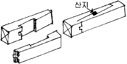
- 엇빗이음
- 겹침이음
- 엇걸이이음
- 긴촉이음
(정답률: 67%)
71. 관람집회 및 운동시설로서 지하층 무대부분의 바닥면적이 최소 몇m2 이상 일 때 스프링클러설비를 설치해야 하는가?
- 100m2
- 200m2
- 300m2
- 500m2
(정답률: 32%)
72. 다음 중 목구조에서 횡력에 의한 변형을 막기위해 사용하는 부재로 가장 효과적인 것은?
- 가새
- 버팀대
- 귀잡이
- 샛기둥
(정답률: 39%)
73. 19세기말의 풍토적 절충주의와 수공예운동에 자극을 받아 모든 역사적 양식에서 자유로운 예술을 탐구하고자 한 것으로, 곡선화된 물결 문양, 비대칭적 형태의 곡선과 같은 장식적 가치에 치중하였던 근대건축의 사조는?
- 아르누보
- 바우하우스
- 데 스틸
- 순수주의
(정답률: 49%)
74. 건축물에 설치하는 방화구획시 10층 이하의 층은 바닥면적 1,000m2 이내마다 구획하여야 한다. 스프링클러 기타 이와 유사한 자동식 소화설비를 설치한 경우에는 바닥면적 몇 m2 이내마다 구획하여야 하는가?
- 1,000m2 이내마다
- 2.000m2 이내마다
- 3,000m2 이내마다
- 4,000m2 이내마다
(정답률: 34%)
75. 서양 건축양식의 발달순서를 나열한 것 중 옳은 것은?
- 그리스 - 로마 - 초기기독교 - 로마네스크 - 고딕 - 르네상스 - 바로크
- 그리스 - 로마 - 초기기독교 - 고딕 - 르네상스 - 바로크 - 로마네스크
- 그리스 - 로마 - 로마네스크 - 초기기독교 - 르네상스 - 고딕 - 바로크
- 그리스 - 로마 - 로마네스크 - 초기기독교 - 고딕 - 바로크 - 르네상스
(정답률: 52%)
76. 거실의 벽 및 반자의 실내에 접하는 부분의 마감을 불연재료, 준불연재료 또는 난연재료로 하여야 하는 건축물이 아닌 것은?
- 당해 용도에 쓰이는 거실의 바닥면적의 합계가 100m2인 오피스텔
- 제2종 근린생활시설중 공연장
- 당해 용도에 쓰이는 거실의 바닥면적의 합계가 400m2인 위락시설
- 문화 및 집회시설중 예식장
(정답률: 40%)
77. 그리스를 대표하는 건축물이 아닌 것은?
- 에렉테이온(Erechtheion) 신전
- 에피다우루스(Epidaurus) 극장
- 콘스(Khons) 신전
- 파르테논(Parthenon) 신전
(정답률: 22%)
78. 그림과 같은 평면을 가진 지붕의 명칭은?
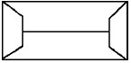
- 박공지붕
- 합각지붕
- 모임지붕
- 반박공지붕
(정답률: 59%)
79. 방화문의 구조에 관한 규정 중 잘못된 것은?
- 철재로서 철판의 두께가 1.5mm 이상인 것은 갑종 방화문이다.
- 철재 및 망이 들어있는 유리로 된 것은 을종 방화문이다.
- 골구를 철재로 하고 그 양면에 각각 두께 0.5mm 이상의 철판을 붙인 것은 을종방화문이다.
- 방화문을 달기 위한 철물은 그 방화문을 닫은 경우에 노출되지 아니하도록 하여야 한다.
(정답률: 40%)
80. 다음은 거실의 용도에 따른 조도기준이다. 가장 부적합한 것은? (단, 바닥에서 85cm의 높이에 있는 수평면의 조도)
- 독서· 식사· 조리 - 150(룩스)
- 설계· 제도· 계산 - 350(룩스)
- 검사· 시험· 수술 - 700(룩스)
- 공연· 관람 - 70(룩스)
(정답률: 31%)